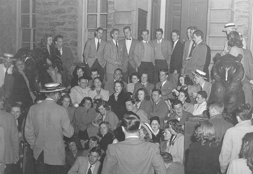
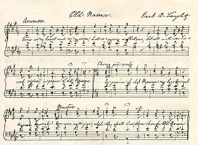

|  |
Singing has a long tradition at Princeton University. Original songs written by Princeton students and alumni go back at least two centuries. In 1869, three undergraduates, George K. Ward (Class of 1869), A. Bailey Kelly (Class of 1870), and John C. Pennington (Class of 1871) compiled the first Carmina Princetonia, a collection of 77 songs "peculiar to Princeton." The tradition of publishing Carmina Princetonia continues to this day, in addition to campus and class songbooks. In this online exhibition we provide the music in sound and print of famous Princeton songs: the Alma Mater 'Old Nassau', 'The Orange and the Black', 'The Princeton Cannon Song' and 'Going Back to Nassau Hall'.
|
Old NassauOld Nassau is the Alma Mater of Princeton University, sung at
every University celebration and reunion. Harlan Page Peck, Class of 1862,
sent the lyrics to the Nassau Literary Magazine in 1859, winning
the magazine's prize for the best college song. The song was originally
set to the tune of Auld Lang Syne until a German tutor, Karl A.
Langlotz, wrote the music later in 1859. (His violin is found in
the University Archives' Memorabilia
Collection.) |
 |
Text Source: Carmina Princetonia, the Songbook of Princeton University (Centennial
Edition)
All music from Going Back: Songs of Old Nassau featuring the Princeton
University Band, Tigertones, and Tigerlilies, copyright 1994.
Special thanks to the staff of the Mendel
Music Library for providing these songs in RealPlayer format.
| Mendel Music Library |
| Mudd Library Music Collections: |
|
|
|
|